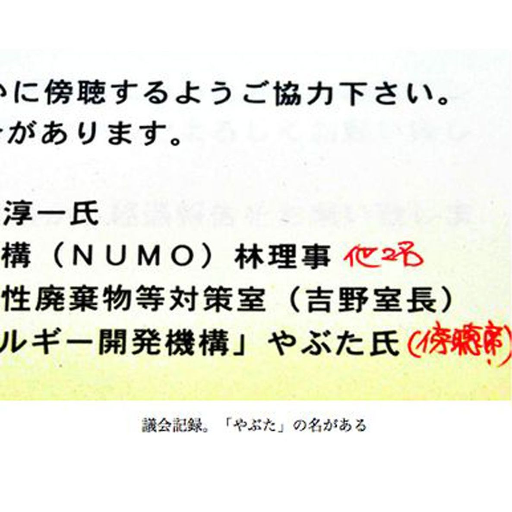

| プロメテウスの罠〔１８〕 地底をねらえ「これは巧妙な罠です」 (朝日新聞デジタルＳＥＬＥＣＴ) | |
| 朝日新聞 | |
| (2013) | |
青森県六ケ所村は、すでに「核のゴミ（使用済み核燃料）捨て場」か。巨額のカネを投入したゴミの再処理工場も止まったまま。真下に活断層もありそうだ。村は安全を国に売ったのではないか。甘い罠に気づくも、口を閉ざすしかない村民。原発が動けばゴミは増えるが、原発を止めるわけにはいかない国。地下のゴミ捨て場を求め、貧しい自治体をねらって怪しげな業者らが暗躍したが、受け入れ先はない。行き場のない「トイレのないマンション」政策の実態を、多くの証言とともに暴く。
内容紹介
青森県六ケ所村は、すでに「核のゴミ（使用済み核燃料）捨て場」か。巨額のカネを投入したゴミの再処理工場も止まったまま。真下に活断層もありそうだ。村は安全を国に売ったのではないか。甘い罠に気づくも、口を閉ざすしかない村民。原発が動けばゴミは増えるが、原発を止めるわけにはいかない国。地下のゴミ捨て場を求め、貧しい自治体をねらって怪しげな業者らが暗躍したが、受け入れ先はない。行き場のない「トイレのないマンション」政策の実態を、多くの証言とともに暴く。
初出
朝日新聞 二〇一二年九月二十八日～十月二十二日
第１章 「ニューモ」から電話
第２章 幽霊団体の籔田氏
第３章 「政権中枢の依頼で」
第４章 これはかなわん、と
第５章 高級車と老舗の菓子
第６章 見事に１銭も出ん
第７章 生きがい崩れ、辞職
第８章 ３本目の十字架
第９章 国から毒まんじゅう
第１０章 「毒ではなかった」
第１１章 主婦をバカにしたな
第１２章 ８８カ所の候補地
第１３章 誇りあるアトム会
第１４章 出発点は深海投棄
第１５章 名前に「ゴミ」がない
第１６章 課長以上が８割弱
第１７章 「記事」付き全面広告
第１８章 私たちが試されてる
第１９章 県民に苦しい説明
第２０章 動かない工場の役割
第２１章 「明確に活断層です」
第２２章 疑わしきは止めず
第２３章 カネ漬けになった
第２４章 これは巧妙な罠です
高知県東洋町の役場で、企画商工課長の大場正博（おおばまさひろ）（６０）は事務処理に追われていた。２００６年３月２０日過ぎ。海辺にある人口３千余の町も、年度末はせわしい。
そのさなか、大場あてに電話があった。「ニューモ」と名乗った。
「ニューモ？」
ＮＵＭＯ（ニューモ）。「原子力発電環境整備機構」の通称で００年にでき、電力各社の拠出金で運営している会社だと電話の声が説明する。声は続いた。
原発から出る高レベル放射性廃棄物を、地下深くに埋める最終処分場をつくります。第一段階として、文献調査を受け入れてくれる自治体を公募しています。その土地が適地かどうか、資料で調べます――。
ここまでは分かった。でもなぜ東洋町に電話がかかってくるのか。ＮＵＭＯの担当者はいった。
「町長さんからはすでに応募の書類をいただいています。住民への周知はどうなっていますか」
寝耳に水だ。大場はびっくりし、町長室へ駆け込んだ。
「町長、どういうことですか。町幹部にも議員にも知らせないで。蜂の巣つついた騒ぎになりますよ！」
町長の田嶋裕起（たしまやすおき）（６９）の説明はこうだった。
文献調査を受け入れると、国から地域に年２億１千万円の交付金が出て、町はその半額以上をもらえる、といわれた。
年２０億円の予算しか組めない苦しい町財政のために、こんないい話はないと応募を決めた。
最終処分を引き受けたわけではなく、文献調査だけなら問題ないだろうと思った――。
しかし、ことは核の問題だ。町長の独断で進めるのはまずい。
大場は田嶋に念を押した。
「とにかく受理しないでくれとＮＵＭＯに伝えます。いいですね」
田嶋も「そうしてくれるか」と納得。大場はＮＵＭＯに電話した。
「町長印が押してあっても、公文書番号も発送の記録もない。正式な文書ではありません。この話はなかったことにしてください。書類は郵送で返却してください」
しかし、ＮＵＭＯは粘った。
「ごあいさつがてらそちらにうかがって書類をお返しいたします」
町長の田嶋は、どんな経緯でＮＵＭＯに応募したのか。
高知県東洋町の企画商工課長、大場正博にＮＵＭＯ（ニューモ）から電話があった前週の２００６年３月１７日金曜日、町長の田嶋裕起を訪れた男がいた。田嶋の著書や助役だった松原範幸（まつばらのりゆき）（６４）の記憶では、こんな経緯だ。
「ＮＰＯ法人 世界エネルギー開発機構 執行役員 籔田哲生（やぶたてつお）」
男はそう名乗った。
籔田は、田嶋の知人で町内の漁協組合長を務める桜井淳一（さくらいじゅんいち）から紹介されてきた。細身で物腰が柔らかい籔田は、京都で不動産会社の顧問をしているという知人を伴っていた。
籔田は核廃棄物の最終処分場をつくるＮＵＭＯについて説明した。文献調査に応募をすれば、それだけで億単位の交付金が出ますよ――。
田嶋の心は動いた。
過疎が進んで人口はピーク時の４割以下に減っている。生活保護率は県内で最も高い。何とか町を振興しようと刑務所の誘致も試みたが、他の自治体に先を越された。
田嶋は「もう一度来て、整理して話をしてください」と告げた。
小雨が降る翌日の土曜日、籔田は再びやってきてせかした。
「他にも応募を検討している自治体があります。月曜日に東京に行くので私が書類をＮＵＭＯに持っていきます。早い方が有利です」
田嶋は「ええ話がある」と松原を呼び出した。松原が町長印を管理していた。
田嶋から説明を聞いた松原は「応募するだけで億の金が入るなんて、そんなうまい話があるか」と思ったが、「競馬と一緒。当たらんやろ」と町長印を押した。
申込書は籔田に託された。
籔田の話はでたらめだった。
文献調査は応募が早いからといって有利になるわけではない。
名乗った団体もうそだった。
登記簿によると、「ＮＰＯ法人世界エネルギー開発機構」は東京都文京区に実在したが、０５年１０月３１日に解散し、すでに存在していなかった。解散前の登記簿の役員欄にも籔田の名前はなかった。
「エネルギー開発機構」が幽霊団体だとは町側の誰も知らなかった。ＮＵＭＯも「開発機構がどんな団体か、知らなかった」と振り返る。
ＮＵＭＯは０２年から公募を始めたが応募が全くなく、籔田が持ってきた東洋町の応募書類に飛びついただけだ、と大場はみている。
籔田はいったい何者なのか。紹介者の桜井さえ「初めて会った人間だ」という。

「ＮＰＯ法人世界エネルギー開発機構」の籔田哲生に会った人間は、東洋町では町長の田嶋裕起と漁協組合長の桜井淳一ら数人だ。
ＮＵＭＯ（ニューモ）への文献調査の応募が問題化してから、町議会で反対の論陣を張った町議の田島毅三夫（たしまきさお）（６５）も会ったことはない。
にもかかわらず２００７年１月１７日と１９日、毅三夫の自宅に籔田から電話があった。１７日は午後２時、１９日は夜９時４０分。１９日は１時間半話した。
籔田は毅三夫を非難した。
「あんたは自分たちが、町長を紹介してくれた漁協組合長に３億円払ったと吹聴しているらしいね。国から多額のカネを受け取っているともいっている」
毅三夫も、町でそういううわさがあるのは知っていた。しかし自分が流したわけではない。逆に「あなたは何者なのか」と尋ねた。
「私たちの上には、政権中枢に通じるハットリという人物がいる。原子力関係の政策はその人の意見を聞かないと動かんくらいだ。表には出ないがその人から頼まれ、ここにきた。私の担当は東洋町だ。核廃棄物の問題を解決するためであって、カネのためではない」
籔田は終始、声を荒らげず紳士的だった。毅三夫は「話の持っていきかたがうまいな」とさえ感じた。
ところが０７年３月１７日、毅三夫は突然、籔田らに名誉毀損（きそん）で訴えられた。京都簡裁で、１２０万円の慰謝料請求だった。
理由は籔田が電話してきた内容と同じだった。訴状には「私共は国の機関から委任を受けて高レベル放射性廃棄物の処分地の選定に努力しております」とあった。
しかし、ＮＵＭＯも資源エネルギー庁放射性廃棄物等対策室も、「委任」を明確に否定する。
「籔田らとは全く関係ないし、他団体に処分場の文献調査で仕事を依頼することはあり得ない」
しかも訴状では、被告である毅三夫の住所が「高知県安芸郡東洋町生見 東洋町役場内」となっている。それは住所ではないし、役場の番地すら書いていない。毅三夫は「あんないい加減な訴状を、裁判所がよく受け付けたもんや」。
裁判は流れた。籔田ら原告が出廷しなかったからだ。１万１千円分の印紙を貼りながら。
訴状に記載された原告の住所は京都市南区にある。そこを訪ねてみた。
「世界エネルギー開発機構」を自称する籔田哲生らが高知県東洋町議の田島毅三夫を名誉毀損（きそん）で訴えた訴状によると、籔田ら原告側の住所は京都市南区になっている。
そこは賃貸マンションだった。築３６年の１１階建て。家賃は月５万円前後だ。部屋には高齢の女性が１人で住んでいた。２０１１年１２月に空き室に入居した。籔田らの名前は聞いたことがないといった。
「機構」の事務所は東京・西麻布のビルで、代表理事を自称するのは中村一光（なかむらいっこう）という人物。そのビルに行くと大家の男性に会えた。
「中村一光という人は確かに住んでいました。問題があったので出ていってもらった。家賃を滞納していましたが、関わりたくなかった」
「世界エネルギー開発機構」という正式なＮＰＯ法人が解散したのは籔田が東洋町に現れる５カ月前の０５年１０月。電力中央研究所出身の研究者、服部禎男（はっとりさだお）（７９）が０１年の発足から代表だった。服部は、名古屋市の自宅でこう語った。
発足してすぐ、おかしな連中が出入りするようになり、私の名前を勝手に使いはじめた。私と一緒の写真を利用したり、勝手に大きな肩書の名刺をつくったり。これはかなわんと思って解散手続きをした。彼らと関わるのはうんざりだ――。
執行役員を自称する籔田、代表理事を自称する中村らが使っていた携帯電話の番号を関係者から聞いた。何度かけても応答はない。「理事」の久本喬也（ひさもとたかや）だけは電話に出た。
「機構は２０年くらい前に解散した。もうないですよ」
――籔田さんらはどこに？
「もう付き合いがない」
――２０年前に解散したなら、東洋町の段階ではもう実体がない。それでは詐欺ではないか。
「あたしは東洋町に行ってないし一切分からない。もう７５歳を過ぎていて、年でね」
東洋町長だった田嶋裕起はどう考えているのだろう。引退している田嶋の自宅を訪れた。玄関口に出た田嶋は「私は卒業した人間。取材は受けない」といった。
――機構のことだけでいい。
「事業報告を一度しか出していないというようなことを聞いた」
――それどころか、当時すでに解散していた。
「解散していない」
――登記簿では解散している。
「もう、いいっちゃ」
田嶋は奥に消えた。
「世界エネルギー開発機構」というＮＰＯが実は存在しないことを、町長の田嶋裕起をはじめ高知県東洋町の関係者は誰も知らなかった。
では、機構の役員を名乗って町長に会ったり、町議を訴えたりした籔田哲生という人物は何者なのか。
６カ月の間、東京や京都を捜し回った。つてをたぐって２０１２年９月下旬、とうとう本人に会えた。
大阪市住吉区の、下町の一軒家が自宅だった。
７２歳。ずっと大阪で不動産業を営み、ゴルフ場や産廃処分場の用地買収を手がけてきた。健康上の理由で最近、引退したという。
籔田に経緯を聞いた。
産廃処分場がらみで「中村一光」という人物と知り合った。機構の代表理事を名乗っている人物だ。
中村は「ＮＵＭＯ（ニューモ）幹部と関係がある」といい、ＮＵＭＯの仕事をやらないかと持ちかけてきた。文献調査の応募書を取ったら、かなりの金が出るとも話した。
応募した自治体に１０億円出るとしたらその２割。または自治体に出る金と別枠で報酬が出る、と。
東洋町にねらいをつけたのは籔田の判断だった。
「核廃棄物を運ぶため海の近くで、しかも金を欲しがる貧しい土地がええから」
日本地図を広げ、高知と和歌山に狙いをさだめた。０６年の年明けから、不動産仲間と自治体を訪ねて回った。
つねに高級車を使った。それに、いつも大阪の老舗菓子店の１万円の菓子折りを持参した。
つてを使って、首長や幹部に会った。ＮＵＭＯのパンフレットをどっさり持って行き、関係を印象づけた。料亭で接待したこともある。
高知県を中心に２０自治体は回った。宿毛市、土佐清水市、芸西村、安芸市、中土佐町、須崎市などを回り、大月町、三原村、安田町などでは町村長にも会えた。だが結果は芳しくない。
「寒い、寒い時期でね。その土地の写真もたくさん撮ってがんばったんやけどね」
東洋町に来たのは、いいかげんくたびれていた３月だった。町の商店街や港を見て回った。
「びっくりするくらいさびれとった。町が死んどった」
文献調査の交付金に飛びついてくるには好条件だった。３月１７日、町長の田嶋に会った。田嶋はすぐ話に乗ってきた。
籔田哲生の言い分を続ける。
思惑違いが分かったのは、高知県東洋町長の田嶋裕起から、核廃棄物埋設に向けた文献調査への応募書類を受け取ったあとだった。
ＮＵＭＯ（ニューモ）にすれば、のどから手が出るほどほしい書類だ。交通費や接待費など経費だけでも５千万円ほど自腹を切ったが、そのくらいＮＵＭＯがポンと出すだろうと思った。
ところが音沙汰がない。「上司」である中村一光（６６）とＮＵＭＯに乗り込んだ。しかし「こちらから仕事を頼んだ覚えはない」。
中村が「密接な関係がある」といっていた幹部は、ＮＵＭＯから出向元の電力会社に戻っていた。その電力会社に連絡をとったが、会えなかった。籔田は怒る。
「能のないＮＵＭＯの代わりに働いたのに、なんや。見事に１銭も出えへんかった」
「世界エネルギー開発機構」というＮＰＯ法人は当時すでに解散していた。解散を記した登記簿を見せると、籔田は漏らした。
「こんなん初めてみるわ。偽団体って知ってたら、初めから自分の不動産会社の名刺使うがな」
電力中央研究所出身の服部禎男が組織のトップだと思い込み、東洋町では服部の略歴まで紹介した。
自分の名刺は中村が送ってきた。籔田を執行役員とした辞令には「服部」という印が押されていた。
「あれも偽造やったんかいな」
籔田の家から中村に電話した。今度は一発でつかまった。千葉県八千代市に住んでいる、という。
八千代市村上南、東葉高速線村上駅前の喫茶で中村に会った。
――機構は解散しているではないか。偽団体だ。
「そうです。だが籔田さんが東洋町に行った時は、私も解散を知らなかった」
――しかし解散前の役員名簿にもあなたの名前はない。
「私は右翼との関わりが強く、ＮＰＯの認可に支障がある。それで名前の登録からは身を引きました」
――服部は勝手に名刺を使われ迷惑したと言っている。
「さあ、よく分かりません」
――もともと何をしていたのか。
「２０代に毎日新聞大阪社会部で暴力団担当の記者をしていました」
後で毎日新聞大阪本社に確認した。「そのような人は在籍していません」との返事だった。
「地底」をめぐる巨額の金に、様々な人間が集まっていた。

ＮＵＭＯ（ニューモ）の幹部らが高知県東洋町にやってきたのは、２００６年３月２８日だった。以前に提出された応募書類を返却するという名目だが、実態は町への顔つなぎだった。
「ＮＵＭＯが食らいついてきたのは当たり前や」
企画商工課長だった大場正博はいう。核廃棄物は、使用前の放射能の量に戻るまで数万年もかかる。そんなものを地底に埋めてもいいという自治体があるとは思えない。大場は書類を郵送で返すように伝えたが、ＮＵＭＯは総勢４人でぞろぞろとやってきた。このチャンスは逃せないと考えたのだろう。
課長会の会長だった大場は翌月の下旬ごろ、役場の課長６人を集め、その場に町長の田嶋裕起を呼んだ。
「処分場を受け入れるかどうかの最終判断は、住民の意向を尊重してください」
田嶋が独走することを恐れたし、大場自身が処分場は嫌だ。文献調査で交付金をもらえば引き返せなくなるという心配があった。
その後まもなく、大場は町長室に呼ばれた。「お前に文献調査応募の仕事をしてほしい」
町長の命令だ。従わざるを得なかった。ＮＵＭＯとともに、文献調査についての住民説明会を開いた。応募ありきではなく「勉強会」のつもりでも、住民の目には「処分場を推進している」と映った。
大阪の建設会社をやめ、Ｕターンで入庁して３０年。水道整備などに励み、町民から感謝されるのが生きがいで仕事をしてきた。それが一気に崩れた。大場は退職を覚悟した。
文献調査の問題がおおやけになると、住民の反対運動が高まった。ある日、反対派の知人が来て、大場の妻に町長の自宅前でのデモに参加するよう迫った。妻は断ったが、これはつらかった。
「自分と家族は別といわれても、そんなわけにいかんき」
田嶋とはご近所でもあった。
田嶋は０７年１月２５日、正式に文献調査への応募を表明し、ＮＵＭＯに書類を発送した。３月２０日、反対派は町長リコールに向け動き始めた。
大場は町長室に行き、田嶋に「ここはいったん手を下ろしませんか」といった。
しかし田嶋は聞き入れず、４月５日に「信を問う」と辞職する。出直し選挙で、田嶋は調査反対の沢山保太郎（さわやまやすたろう）に２倍以上の大差で敗れた。
大場は、７月１日付で辞職した。
高知県東洋町から北東に３３０キロの岐阜県御嵩（みたけ）町でも「地底」が問題になっていた。
町長の柳川喜郎（やながわよしろう）（７９）は町長室で、体中の痛みをこらえながら動燃（動力炉・核燃料開発事業団）の幹部たちと会っていた。
１９９６年の１０月３０日、「御嵩町事件」が起きた。
町長の柳川が帰宅したとき、２人組の男に襲われ、重体になった事件だ。産廃処分場計画に柳川が反対したためとみられている。
柳川がようやく公務に復帰したのは１２月９日。動燃幹部らが訪れたのは、そのしばらく後だった。
彼らはこういった。
原発の高レベル放射性廃棄物を地下深くに埋める地層処分の研究施設を隣の瑞浪（みずなみ）市につくります。施設の名前は超深地層（ちょうしんちそう）研究所です。よろしくご了解いただきたい――。
予定地は、御嵩町の産廃処分場計画地から１０キロほどの場所だ。動燃は、以前からその周辺に関係を持っていた。東濃地域には国内最大のウラン鉱床があり、動燃が採掘していたためだ。
柳川は「３本目の十字架は背負いたくない」と思った。
町は明治から戦後にかけ、「亜炭の町」として栄えた。亜炭は繊維や陶磁器などの産業の燃料になった。柳川が学生だった時代、列車は炭鉱労働者でいつも満員だった。
だが石油の登場で、６７年ごろには全ての炭鉱が閉山。乱掘の後の町には廃坑だけが残った。廃坑は落盤を起こし、今でもよく住宅が傾く。町民にとっては、繁栄のツケとして背負い続ける「十字架」だ。
柳川はＮＨＫの解説委員から町長に転身した。就任した９５年は、産廃処分場計画のまっただ中だった。就任直前の２月、町は業者から「振興協力金」などの名目で３５億円をもらう協定を秘密裏に結んでいた。
柳川はこれに反対した。水源が汚染されると考えたためだ。産廃処分場を受け入れると、再び将来にわたる重みを背負う。それは「２本目の十字架」に見えた。
さらに今度は核廃棄物を地下に埋める研究をする施設が来る。動燃の幹部は「研究所は地下水や地層を調べるだけで、実際に放射性廃棄物を持ち込むことはありません。処分場に転用することもありません」と説明するが、果たしてどうか。
ただ、このときの柳川は産廃問題で頭がいっぱいだった。「３本目」に危機感を抱くのは５年後のことだ。
お隣の瑞浪市に超深地層研究所をつくりたい――。
岐阜県御嵩町長、柳川喜郎に動燃が面会にきてから５年以上が経った２００２年７月、研究所は地下１千メートルに向けて着工した。
着工４カ月前の３月、御嵩町議会で町議の岡本隆子（おかもとたかこ）（５８）が、柳川への質問に立った。岡本は産廃反対運動にかかわり、町議になった。
「御嵩町を含む研究所の周辺９市町村は、申請すれば電源立地特別交付金が出る。どう対処するのか」
交付金はそれまで、発電施設の立地などに出されてきた。研究所が交付金の対象になるのは、処分場に転用しようという思惑があるからではないか――。
柳川はこう答弁した。
「まんじゅうは食いたい。されど毒まんじゅうということもある。毒が入っていないとしても、非常に甘いまんじゅうを食べ過ぎますと糖尿病になる恐れがございます」
他の８市町村が「福祉センター建設」や「温泉掘削」で交付金の申請を決める中、柳川は動かなかった。
交付金の申請期限は１０月中旬だ。９月議会で岡本が再び質問する。柳川はこう答弁した。
「金の話になると尻尾を振ってすり寄っていくのは大変感心しない。武士は食わねど高ようじです」
木曽川沿いの産廃処分場計画では、業者の金にも暴力にも負けず住民投票で「ノー」を突きつけた。その自負が、柳川にはあった。
国のやり方は「金をやれば黙るだろう」という魂胆が見え隠れする。御嵩町民をばかにしている。そう答えながら、柳川には気になる問題があった。重度の障害がある息子を育てる鈴木千鶴（すずきちづる）（５８）のことだ。
「私が死んだら息子はどうなるのか。それを考えると不安でたまらない。安心して預けられる福祉施設をつくってほしい」
千鶴の長男、隆介（りゅうすけ）（３２）は生まれたときに頭蓋（ずがい）内出血し、脳性小児麻痺（しょうにまひ）になった。知能と身体に重度の障害が残る。当時は養護学校高等部にいた。
隆介が年齢を重ねるごとに、千鶴の悩みは深くなった。養護学校を卒業してしまえば行く所がなくなるからだ。自宅介護では、いずれ親は先立つ。
息子が１人でも生きていける場所がほしい。
千鶴は就任直後の柳川のもとへ通い、施設をつくってほしいと何度も何度も求めた。
岐阜県御嵩町に住む鈴木千鶴の願いは、重度の障害がある息子の隆介を安心して預けられる福祉施設が町内にできることだった。
施設を造ってほしい。町長の柳川喜郎のもとへ、障害者の子を持つ親同士で何度も足を運んだ。面会の約束が取れないときは、柳川がトイレに行くところをつかまえた。
だが柳川にしてみれば先立つものがない。産廃処分場を受け入れていれば、福祉施設費として業者から１０億円がもらえたが、処分場の建設は拒否した。
柳川の返事が煮え切らない中、隆介は養護学校高等部を卒業した。
千鶴たち障害者の親は独自に動き出す。古い家を借り、介護職員を雇って隆介ら３人を通わせた。
町から年間約１００万円の補助が出た。それでは１５０万円足りない。千鶴たちは軽トラックでアルミ缶を集めて回ったり、バザーを開いたりしてしのいだ。
とはいえ親たちの努力には限界がある。家は途中で家主に返さねばならなくなった。第一、親の体力がいつまでもつか。親がいなくなったら終わってしまう話だ。
２００２年３月の町議会で、柳川は超深地層研究所に絡む電源立地特別交付金を「毒まんじゅう」と呼んで申請しなかった。しかし、千鶴たちの苦闘を見ると悩みが深まった。
柳川は決断する。
その秋、資源エネルギー庁やＮＵＭＯ（ニューモ）を訪れ「交付金をもらっても何かを押しつけられることはないですね」と念を押した。「毒まんじゅうではない」と判断し、１０月、交付金を申請した。
３年分の交付金２億７千万円で０５年、障害者の授産施設「あゆみ館」を建てた。ゆっくりでいいから歩み続けてほしいという願いを込めた。
隆介は、あゆみ館に月曜から金曜日まで通う。パンづくりなどの仕事はできないが、仲間に囲まれるだけで表情が明るくなる。あゆみ館に客が訪れたときは「ありがとう」と書かれたうちわを持って出迎える。
申請の翌年から交付金の性格は変わった。用途が建設費などハード面に限られていたのが、人件費などのソフト面にも使ってよくなった。
柳川が退いた後、御嵩町は保育園の人件費や子どもの医療助成費を、１億２千万円超の交付金で賄っている。柳川はいう。
「産廃も核廃棄物も根っこは同じだ。弱っている方へと金の力で迫ってくる」
２０１２年６月４日、日本原子力研究開発機構（旧動燃）のウェブサイトの記事が削除された。放射能などの説明を夫婦げんかにたとえて漫画にし、激しい世論の批判を浴びたためだ。
漫画にはこうあった。
――奥さんの「怒鳴り声」が「放射線」。
――怒鳴り声を上げてしまうような奥さんの「興奮している状態」が「放射能」。
――「怒って興奮している奥さん」そのものが「放射性物質」。
サイトには「女性は男性に比べ原子力の技術的な情報の理解度が低い」とも書かれていた。
不愉快だ、と岐阜市の主婦、兼松秀代（かねまつひでよ）（６４）は怒る。「動燃は知らない相手をバカにする」。不祥事や統合で名前が変わっても動燃の体質は変わっていない、と兼松は思う。
１９９５年８月、岐阜県瑞浪市に超深地層研究所をつくる計画を動燃が発表したとき、兼松は直感的に思った。
「研究所は、そのまま核廃棄物の最終処分場になってしまう」
兼松は同じ思いを抱いた母親仲間と動燃を訪れ、研究所をなぜ岐阜県につくるのか、説明を求めた。
研究所の担当者はこう答えた。
「偶然、研究者が集まっている。日本の真ん中で見学者も来やすい」
ばかにされている、と感じた。だが反論できない。兼松は思った。
「勉強しておかなければ、無知な女性がヒステリックになっているといわれるだけだ」
猛勉強が始まる。動燃、国、自治体に情報公開請求を繰り返した。膨大な資料の一つ一つをたんねんに調べた。大学で専攻した文学研究の経験が生きた。
調査の費用がかさんだ。家族に迷惑をかけるわけにはいかない。美容院の回数を減らし、研究所に行くときは駅から３０分かけて歩いた。
開示文書のカラーコピーには１枚１４０円も請求された。動燃自体が業者にその額を払うからだ。
「あなた、コンビニなら５０円よ」
言い返し、値切った。１枚１４０円とはいえ、３倍のお金を漫然と払おうとする動燃に、力の大きさを感じた。
兼松が原発問題に目覚めたきっかけはチェルノブイリ事故だった。はるか離れた三重県の茶から、放射能が検出された。岐阜は三重の隣だ。
反対運動を始めてから５年、兼松はついに決定的なものを探り当てた。
情報公開で得た文書は玉石混交。膨大な土砂の山から一粒のダイヤモンドを見つけるようなものだ。
２０００年１１月１３日、兼松秀代はついにそのダイヤを見つけた。
核燃料サイクル開発機構の事業所がある岐阜県土岐市から公開された文書だった。核燃機構は９８年に動燃が名を変えた組織。そこが市に出した資料に、こう書かれていた。
「処分予定候補地の選定に資するため、全国を対象とした地質環境調査を実施した」
ＮＵＭＯ（ニューモ）ができる前、核廃棄物を埋める場所の選定を、動燃が極秘で進めていたのではないか。
兼松は核燃機構に、地質環境調査の公開を求めた。回答は対象地の地名が伏せられた。「事業の適正な遂行に支障を及ぼす」が理由だった。
０３年２月１７日、兼松は公開を求める訴訟を名古屋地裁に起こした。費用は２０万円。むかし教師をしていた高校の退職金をあてた。
動燃相手にいつかは裁判をして、その体質を明るみに出してやろうと思っていた。うそばかりつかれていると感じていたからだ。
瑞浪市に動燃が超深地層研究所をつくると発表した９５年には、福井県にある高速増殖炉もんじゅの事故があった。その事故の情報も動燃は隠そうとしたではないか――。
裁判で核燃機構は、地名は公表できないと答えた。「調査で候補地を絞ったという誤報があったため」とし、証拠として記事も提出した。
兼松は、調査報告書に「地質環境的に望ましい候補地」と書かれていることを指摘し、「候補地だと機構自身がいっている」と主張。報道については「予定地とは書いていない」と誤報を否定した。
０４年９月２４日の結審。兼松の反論を読みながら、裁判官がニコッとしたのが見えた。自分の文章に納得してくれている。うれしくなった。帰り道、弁護士と喫茶店に行った。久しぶりのぜいたくだった。
１２月１７日、名古屋地裁（裁判長・中村直文）は不開示を取り消す判決を出した。
「国民の理解を得ることが困難であることを理由として保有する情報を非開示とすることは許されず、説明の責務を放棄するに等しい」
判決を受け、核燃機構は９道府県２５カ所の「地層処分に適した地区」を公開した。さらに裁判の対象外の調査も自主公開し、計２３道府県８８カ所を明らかにした。その中に瑞浪市も含まれていた。
動燃（動力炉・核燃料開発事業団）は１９９５年１２月、福井県敦賀市の高速増殖原型炉「もんじゅ」でナトリウム漏れ事故を起こす。
翌年１月１３日、１人の職員が自殺した。総務部次長の西村成生（にしむらしげお）（当時４９）。事故直後の現場のビデオを、動燃が隠したことが発覚した。その内部調査を担当していた。
自殺の前日、記者会見で西村は、ビデオが本社にあることを知った日を２週間以上遅く回答した。動燃をかばおうとしたとされる。
動燃理事長あてに遺書があった。そこには、動燃が「信頼の回復に努めていこうとする出鼻（原文のまま）をくじく結果となり、重くその責任を感じている」とあった。
葬儀には動燃職員ら１５００人が参列した。会場は静まりかえっていた。西村と同期の増田純男（ますだすみお）（６７）は「あれは悲しかった」と語る。
増田は核廃棄物を地下に埋める研究をしている。西村とともに６９年、動燃１期生として入社した。
新人研修の後、茨城県東海村の旅館で、研修担当者がいった。
「君らは誇りあるアトム会だ」
日本の原子力研究を自分たちが担うと思うと胸がふくらんだ。
事務系の西村が総務畑を歩む一方で、増田は廃棄物対策室のスタート時からのメンバーとして地層処分の研究に没頭した。
「どんなものも処理してやるぞと思った。町工場の職人のオヤジさんみたいな気概でした」
ナトリウム事故で動燃の信頼が揺らぎ、同期を失った。それでも「アトム会」の自負は持ち続けた。自分たちの研究が、原発を動かす上で欠かせないことなのだ。
研究が進むにつれ、増田は地層処分への確信を深めていく。
――地下深くの水を調べると、数万年以上の古いものが多い。深層地下水の動きは極めて遅い。
――地下深くは酸素がほとんどない。化学反応が起こりにくい。
――地下深くは地震の揺れが地上に比べて極めて小さい。
しかも、ガラスに閉じ込めた上でさらに金属容器に入れる。
地層の「天然バリアー」と、ガラス・金属容器の「人工バリアー」に守られ、人体に影響があるほどの放射性物質は地上に漏れ出ない。数万年間の時の流れにも耐えられる――。それが増田の結論だ。
９７年ごろから、研究のまとめに入った。その最中で、増田は思わぬ報告書を発見する。
１９９９年、増田純男ら旧動燃の研究チームは「わが国における高レベル放射性廃棄物地層処分の技術的信頼性」というリポートをまとめるため追い込みに入った。
国会で成立間近の「最終処分に関する法律」を支えるためだ。１日１５時間、研究室にこもった。
「過去の経緯も盛り込んでおこうかな」
作業が大詰めを迎え、増田が過去の原子力委員会の報告書をめくっていると、日本で初めて原子力発電に成功する前年の６２年の報告書に目がとまった。そこにはこうあった。
「国土が狭あいで地震のあるわが国では、最も可能性のある最終処分方式としては深海投棄であろう。地下水、人口の分布状況などからみて、放射性廃棄物の土中埋没による処分は禁止すべきである」
先人は、核廃棄物を深海に捨てるつもりで原発を始めたのだ。
それが７５年、廃棄物の深海投棄を禁じた「ロンドン条約」が発効し、土中埋没（地層処分）しか選択肢がなくなった。増田が研究を始めたのはその翌年の７６年だった。
報告書を何度も読み返した。しかし「地層処分禁止」の理由について「地震がある」「人口密度が高い」と一般論を書いてあるだけで、具体的な調査研究がなかった。
「先人を悪くいうわけではないが、どれだけ調べたというのか」
２０１２年９月、そんな増田の自負心に再び挑むような提言が日本学術会議から出た。地層処分の候補地のメドすら立たない中で、原子力委員会の諮問に答えたものだ。
学術会議の結論はこうだった。
「万年単位の将来を確実に予測するのは困難。技術が確立されるまで、埋めずに管理すべきだ」
増田は学術会議の提言に反対だ。地下に埋めなければ地震をはじめ自然災害やテロ・戦争の脅威にさらされる。代わりの技術も開発は難しい。「正しくても納得してもらえない」のが地層処分の欠点ではないかとすら思うようになった。
人類が飛行機に乗るようになったのは、ライト兄弟が飛んでみせたからだ。しかし地層処分が数万年後に成功していることは、誰にも証明できない――。
だが、納得してもらう努力を原子力に携わる側が怠っているとも感じている。増田は、００年にＮＵＭＯ（ニューモ）が発足した当時のことを思い出す。
増田は技術担当理事として加わっていた。
旧動燃で核廃棄物の地下埋設（地層処分）を研究してきた増田純男は２０００年、ＮＵＭＯ（ニューモ）の発足に技術担当理事として加わった。
前年に地層処分に関する論文をまとめていて、旧動燃が「地層処分を一番分かっている人材」と推した。
ＮＵＭＯの英名は「Nuclear Waste Management Organization of Japan」。訳せば「日本核廃棄物管理機構」なのだが、ＮＵＭＯは日本語名を「原子力発電環境整備機構」としていた。waste、つまり「廃棄物」がない。
増田は怒った。「なぜ廃棄物という言葉を入れないのか」
ＮＵＭＯの仕事は原発が出す核廃棄物を処分することだ。「原発の環境整備」では訳が分からない。
原発を今やめても、すでに出た廃棄物は処分しなければならない。
国民１人が８０年間、利用する電力の半分を原発で賄えば、それで生じる危険な核のゴミ「高レベル放射性廃棄物」は、ガラス状に固めてゴルフボール３個分になる。１億人だとゴルフボール３億個。それは何が何でも安全に処分する必要がある。
「どうして名前でごまかそうとするのか。正面から国民に向き合い、きちんと説明しなければだめだ」
しかし、ＮＵＭＯの立ち上げで増田がいくら説いても、耳を貸す人はいなかった。
それから１２年。
最終処分場の候補地としては、高知県東洋町が０７年に文献調査に応募しただけ。それも取り下げられた。
東洋町で当時、商工会長としてＮＵＭＯに協力した西岡尚宏（にしおかなおひろ）（５５）は、今は町議をしている。
「ＮＵＭＯは当時から、処分場事業に本気では取り組んでいないように感じられました」
電力会社から出向していた職員たちは「じきに本社へ戻りますから」と話していた。ふだんの仕事ぶりはいま一つなのに、国の役人が東洋町に来るときは、頑張って高級レンタカーで空港まで出迎えていた。
そんな組織にもかかわらず、広報活動の予算だけは潤沢だった。新聞広告を出したり、テレビにＣＭを流したり。００年度から１１年度までで、新聞広告費が６３億８８００万円、テレビＣＭ費が５８億４２００万円。
これだけのお金を使いながら、どの新聞やテレビにいくら出すかの戦略はあいまいだ。現広報課長、阿部克也（あべかつや）（５０）は「アバウトです」と明かした。
核廃棄物の最終処分場をつくるという大仕事を抱えるＮＵＭＯ（ニューモ）。その組織はちょっと変わっている。
ＮＵＭＯは全職員８８人のうち課長以上が６９人もいる。実に８割弱。それより下は１９人だけだ。
肩書は年齢を目安に決まる。５０代なら副部長、４０過ぎくらいは課長、３０代で課長代理。課長が多いのは、「外部の人と接するときのため」と彼らはいう。
広報部の場合は部長１人、グループマネジャー１人、副部長１人、課長が４人いる。その下は課長代理が１人いるだけ。ヒラはいない。
課長の阿部克也は「下がいないので、何でも自分でやらなきゃいけない。大変なんですよ」とぼやく。
しかも職員のほとんどが各電力会社からの出向組だ。たとえば阿部は東北電力から来ている。
理事長の山路亨（やまじとおる）（６４）が話す。
「生え抜きを増やしていきたいんです。最終処分場は、調査、建設から埋設まで１００年かかる。地域の人と親子３代にわたって信頼関係を築かなくてはなりませんから」
しかし生え抜きは、ＮＵＭＯができて１２年たっても、８８人のうち２４人にすぎない。
山路は２００６年１２月、東京電力常務からＮＵＭＯの理事長に転じた。東洋町が文献調査への応募をめぐって紛糾していた最中だ。「最終処分事業には詳しくなかった。なぜ自分に理事長が回ってきたかはよく分からない」と明かす。就任後、すぐに高知県へ足を運ぶ。
不慣れな理事長、８割が課長以上、生え抜き不在。そんな組織でありながら、ＮＵＭＯは広報活動ではしたたかな動きを見せている。
「地域オピニオンリーダーとの座談会の開催について」と題した仕様書がある。ＮＵＭＯが広告会社に仕事を発注するためにつくった。
実施目的にはこんなことが書いてある。
「全国の地方新聞社の協力を得ながら、地域のオピニオンリーダーとの座談会を共催」「新聞掲載による読者への情報提供を行う」
掲載方法はこうなっていた。
――座談会が終わった後は「全１５段（記事１０段＋広告５段）」で掲載する。
１ページのうち、３分の２が座談会の記事で、３分の１が広告という意味だ。
広告の方は広告会社が担って当たり前だが、記事は新聞社がつくるものではないのだろうか。
ＮＵＭＯ（ニューモ）の広報活動の主軸は、核廃棄物の最終処分事業に関する新聞、テレビなどへの広告出稿だ。
高知県東洋町が文献調査に応募した直後の２００７年度が飛び抜けて多く、新聞に１５億５千万円、テレビに１１億６千万円の広告を出している。ほか、地方の新聞社と共催で行う「紙上座談会」に７４００万円。雑誌広告などを加え、広報費総額は２９億３千万円。
紙上座談会については、１ページの３分の１を事業の広告とし、３分の２を座談会の記事とする内容の仕様書をつくっていた。
広報部課長、阿部克也はいう。
「下に広告が載るから、上には好意的な内容の記事が載ればいいねというのは、もちろんありますよ」
だがそれは期待に過ぎない、こちらからコントロールなんかできない、と阿部は話す。
「新聞社さんを怒らせたら、それこそマイナスになりますから」
理事長の山路亨も「記事の内容は新聞社にお任せしている。気をつけているつもりです」という。
しかし実際は記事スペースの分もＮＵＭＯが広告代を払っている。つまりＮＵＭＯが１ページ分をまるまる買い取ったうえで、３分の２のスペースを使って座談会を載せる。記事ではなく広告だという意味で新聞社側は紙面上部に「全面広告」と入れるが、「企画特集」などとあいまいな表現にする場合もある。
全面広告である以上、座談会にＮＵＭＯの意向が反映されないことはあり得ない。たとえば仕様書には座談会の司会者を「論説委員等」と具体的に指示している。
ＮＵＭＯを監督する資源エネルギー庁も、同様のやり方で最終処分事業のフォーラムを行っている。
多くの場合、地方紙の論説委員や編集局長が司会を務める。パネリストとして、エネ庁の放射性廃棄物等対策室長やＮＵＭＯの技術部長、消費者団体の役員らが参加する。
フォーラムの内容は、１ページの３分の２を使って詳報する。３分の１はイラストなどを使った広告だ。
０８年９～１１月には福井、島根、山梨など全国１２カ所で開かれた。各地の新聞社やテレビ局が共催した。
９月、広告会社やエネ庁を驚かせることが起きた。高知新聞がフォーラムの共催を断ったのだ。
高知県内では東洋町の文献調査応募で論議がわき起こり、前年の０７年には推進派町長が辞職、出直し町長選で反対派に敗れていた。
高知新聞は２０万部。県内では圧倒的な発行部数を持つ。
２００８年９月１６日火曜日、高知市にある新聞社２階の編集局に、小さな記事の見本が回ってきた。
「全国エネキャラバン・考えよう！ ニッポンのエネルギーのこと ｉｎ高知」
翌月８日に高知市内で開かれるフォーラムの事前告知だった。核廃棄物の地層処分について、資源エネルギー庁の室長が説明し、ゲストと話し合うというものだ。主催者として高知新聞も名を連ねていた。
地層処分では前年、県最東部の東洋町が文献調査の受け入れをめぐって紛糾し、出直し町長選があったばかりだ。調査受け入れを表明した前町長の田嶋裕起が落選している。
事前告知の記事を見た編集局の部長たちがざわついた。
政治部長だった須賀仁嗣（すがひとし）（５４）は「なんじゃこりゃ、と思いました」。主催という言葉が引っかかったのだ。東洋町の件では、中立の立場を貫いたという自負があった。
フォーラム開催まで１カ月を切っている。部長たちは動き出した。４日後の２０日土曜日、部長会として編集担当の役員に、以下のような趣旨の文書を出した。
――主催することは、広告料ほしさに核廃棄物処分場誘致の推進派に転じたという誤ったメッセージを県民に伝えかねません。私たちは、札束で頬を張るような国の原子力政策を批判してきました。それがそのまま、私たちに返ってくるでしょう。この際、フォーラム自体を中止することが妥当ではないでしょうか。
急きょ、臨時役員会が開かれた。「主催」が「後援」に変更された。直前だったので、フォーラムを中止することはできなかった。
現社長の宮田速雄（みやたはやお）（６２）は当時、販売局長で役員だった。
「うちには部長でも役員に平気でモノを言う文化があって、だから役員会が通した話が土壇場でひっくり返った。主催が後援に変わっただけやから立派な話やないがやけど」
宮田は販売局長になるまでは事件記者一筋だった。「当たり障りのない記事ではなく、切れば血が出る記事」を信念に新聞をつくってきた。
販売の現場を知ってからは、新聞を１部増やすことがいかに大変かを知った。広告費の落ち込みも頭が痛い。それでも肝に銘じている。
「新聞社の目的はカネではない。経営が厳しい時こそジャーナリズムが試される」と。
核廃棄物の地下埋設（地層処分）は、いまや行き詰まっている。受け入れる自治体がないのだ。
２０１１年７月１１日、青森市の青森国際ホテル。青森県内にある原子力施設の安全対策について、県民への説明会が開かれた。
福島の原発事故を受け、県が主催した。１５０人の県民が参加し、六ケ所村に使用済み核燃料の再処理工場を持つ日本原燃や、経済産業省の幹部が出席した。
保育園の理事長が質問をした。
「六ケ所村にある高レベル放射性廃棄物は、地層処分をする場所を決めて搬出するということになっています。しかし、そういう場所はないのではないか。置きっぱなしになることはないのでしょうか」
資源エネルギー庁の核燃料サイクル産業立地対策室長、佐野俊（さのしゅん）（４８）が答えた。
「具体的な名前は申し上げられませんけれども、現在、最終処分地の文献調査に関心を持っている自治体が複数あるということだけ、ご紹介させていただきます」
だが実際に、文献調査の応募にこぎ着けるような話はない。
文献調査に応募があったのは高知県東洋町だけで、それもすぐ取り下げられてしまった。そもそも最終処分場の建設は放射性廃棄物等対策室の仕事で、佐野の仕事ではない。
佐野は説明会の前に、廃棄物等対策室で「文献調査に関心のある自治体があるっていっていいよね」と了解をもらっていた。苦し紛れの回答だった。
佐野が０９年７月にサイクル室長に就いて以来、青森県民から必ず尋ねられることが二つあった。
「核燃料サイクルは本当にできるのか」
「最終処分場はどうなるのか」
六ケ所村には、使用済み核燃料からプルトニウムを取り出すための再処理工場がある。容量３千トンの工場に、全国の原発からすでに２９００トン超の使用済み核燃料が持ち込まれている。
しかし工場は９３年の着工いらい技術的なトラブルが相次ぎ、本格運転できていない。このまま、村が原発のゴミ捨て場になってしまうのではないか。地元には不安がある。
住人に対し、佐野は「処分場立地に関心を持っている自治体はある」と答えざるを得なかった。「最終処分場の建設については担当外なのですが、担当外だから知りませんとはいえませんでした」
２００４年４月。経産省の３０歳代の官僚らが、自主的にある試算を行った。原発から使用済み核燃料を持ち出せなくなったらどうなるか、という計算だ。
根拠の数字は、電気事業連合会から得た非公開のデータだった。
各原発はそれぞれ、使用済み核燃料を保管するプールを持っている。福島第二原発の場合、プールは１３６０トンまで保管できる。
プールの使用済み燃料は次々と青森県六ケ所村の再処理工場に運ばれていく。そのため、各原発のプールには常に空きがあり、あらたな使用済み燃料を入れることができる。
だがもし、六ケ所村に持ち出せなくなったらどうなるか。試算したのは「プールが満杯になり、原発を止めざるを得なくなる時期」だった。
福島第二原発が最も余裕がなく、０４年段階であと１１０トン分しかなかった。六ケ所村に持ち出せなければ０５年で止まる。全国に１６カ所ある原発のうち１２年までに１１が止まり、１７年には１６原発すべてが止まる......。
六ケ所村の工場がトラブル続きで運転できないにもかかわらず、１９兆円もの費用がかかる事業を継続している。その大きな理由が使用済み核燃料の受け入れであることを、この試算が浮き彫りにした。
再処理政策が維持されたことで、六ケ所には１１年度までに２６００トンの使用済み核燃料が持ち込まれた。原発が止まることはなかった。
資料は再処理政策を白紙に戻すことを狙いにつくられた。作成に関わった官僚たちは、省を追われたり電力関係の部署から外されたりした。
東京大学名誉教授の山地憲治（やまじけんじ）（６２）は確信する。
「原発を止めないため、使用済み核燃料を各原発から持ち出すことが最優先。六ケ所の工場はそのためにある。どんなに費用がかさんでも」
山地が主宰する研究会は０３年、業界誌「原子力ｅｙｅ」で、再処理を「時代遅れの国策」と批判する連載をはじめた。巨費をつぎ込んでまでするのは経済的にも問題だ、と。
ところが連載は２回目から中止になった。編集後記には「本誌は、産業界と一心同体で産業等の動向を浮き彫りにすることで評価いただいてきた」とあった。
六ケ所村の再処理工場に運ばれた使用済み核燃料は現在２９００トン。容量は３千トンなので、六ケ所にも運べなくなる日が近い。
そこにもってきて、新たな問題が浮かび上がった。
２００７年の新潟県中越沖地震で、柏崎刈羽原発が想定を超える揺れに見舞われた。翌年から、原子力施設周辺の断層が活断層かを評価する作業がスタートする。
１０年８月３０日、東京都千代田区霞が関の虎ノ門三井ビル。東京大学で地球惑星科学を専攻する准教授、池田安隆（いけだやすたか）（６０）はきっぱりといった。
「皆さんがそう思うなら結構ですが、私はまとめに納得しません」
原子力安全委員会のＷＧ（ワーキンググループ）４。使用済み核燃料の再処理工場がある青森県六ケ所村を審議しており、その日出席した委員は６人。池田はその１人だった。
ＷＧ４では、池田らがいう下北半島沖の海底から、六ケ所村の下を通過する約１００キロの「大陸棚外縁断層」が議論の焦点となった。
外縁断層は、１千万年以上前に日本列島が大陸から引き離された時にできた断層。ポイントは、その外縁断層が活断層かどうか。ここ１２万５千年の間に地震を起こしていれば活断層と定義される。活断層だと、これからも動く可能性がある。
池田は、活断層だと主張した。根拠は二つ。
（１）断層の上の地層表面が不自然に波打っている。これは最近、地震が起きたことを意味する。
（２）下北半島の東海岸が３０～５０メートル隆起している。これは１２万５千年前以降、最低でも１０回は地震が起きたことを示す。
池田は「明確です。活断層であることは９５％間違いない」。
しかし、池田のその意見は受け入れられなかった。ＷＧ４の主査で首都大学東京の教授、山崎晴雄（やまざきはるお）（６１）は意見をこうとりまとめた。
「多くの委員が活断層ではないということで了解した。そういうことで止めておきたい。異論があったことは認めますが、強い根拠があったわけではない」
池田はもともと原発に興味があったわけではない。ただ学者として委員会に加わった以上、判断を曲げるわけにはいかないと思っていただけだ。もし六ケ所村で大惨事が起きたらどうするのか。
脳裏には、薬害エイズで法廷に立った故安部英（あべたけし）の姿があった。どんなに老いても責任は問われる。
「正義とか、そんなかっこいい話ではありません。学者としての義務です」
他の委員が活断層と認めなかった根拠はなにか。ＷＧ４の山崎に尋ねた。
１００キロにわたる大陸棚外縁断層は活断層なのか。
東京大学准教授の池田安隆は「９５％間違いない」というが、原子力安全委員会のＷＧ（ワーキンググループ）としては「活断層ではない」と判断した。
ＷＧの主査として意見をとりまとめた首都大学東京教授、山崎晴雄にメールや電話で取材を申し入れた。
最初は断られた。「原発報道が政治闘争になっている。発言が正確に伝わらない」との理由だった。
２０１２年７月、大学の講義を終えるのを待ち、教室から出てきた山崎に直接取材を申し入れた。その後２日間にわたり計２時間、応じてくれた。
――なぜ活断層ではないと。
「今の資料では活断層かどうか、決着がつかない」
――池田准教授は、地層の表面が曲がり、海岸が３０メートルも隆起していることを「地震が最低でも１０回起きた証拠」と説明している。
「地層が曲がっているのは、傾いたところに地層ができた可能性がある。海岸の隆起については、地震でなくても土地は隆起する。結局は、結論が出ない問題をどうするかということだった」
――池田説をもっと尊重する余地はなかったのか。
「もしそれを認めれば、六ケ所村の再処理工場も、隣村の東通村にある原発も補強が必要になる。稼働できなくなる。『疑わしきは黒』では、全て黒になってしまう」
――防災上、疑わしかったら再処理工場や原発を止めるべきでは？
「原発は必要だ。化石燃料は限りがあり、太陽光発電もまだまだだ。分からない時、最後は原子力に対する価値観で決まる」
山崎は旧通商産業省の地質調査所の出身だが、「それは全く関係ない。自分が勉強した結果」という。
――結論が出なければ、出なかったと報告すべきではないか。
「それは建前だ。原発行政について、政治は判断を逃げ、われわれに責任を押しつけてくる。そんな判断をしたくはないが、そういう社会の仕組みになっている」
原発事故の前と後では「戦前」と「戦後」くらい世論が変わってしまったと山崎はいう。「今なら池田説が有利だよね」。しかし、原発が必要だという信念は揺るがない。
「もう委員会の主査なんてやりたくない。今度機会があれば池田さんにぜひ主査をやってもらいたい」
青森県六ケ所村の全４６００世帯には、役場貸与のテレビ電話がある。そこに料理のレシピが送られてくる。「里芋のあんかけ」とか「野菜の京風煮」とか。住民は「そんなもの教わらなくてもつくれる」とあまり評判はよくない。
テレビ電話の名前は「知らせますケン」。ロゴマークに犬の絵がついている。電源三法交付金が原資で、２０１０年度に配備した。
配備の目的は防災だ。災害時にサイレンを鳴らしたり避難場所を示したりする。家族や知り合いの安否を確認するのにも使える。
平時には電話代わりに使ってよく、村内通話は無料だ。ゴミの収集日や予防接種の連絡も来る。
しかし１１年３月１１日、大震災のときに「知らせますケン」は黙り込んでいた。安否確認もできなかった。停電で使えなかったのだ。
村の千歳平診療所長、米田喜與志（まいだきよし）（６１）はいう。
「あれはまったく意味がない。村がカネ依存症になっている証拠だ。役に立とうが立つまいが、くれる物なら何でももらえ、と」
米田は村の生まれだ。子どものころ、村には９０歳の肛門（こうもん）科の医師がいるだけだった。小学生のとき、医師になろうと決めた。
中学で仙台に出た。下宿先でよくからかわれた。
「六ケ所村は布団がなくて、わらで寝てるんだって？」
悔しかった。六ケ所村は「アモコの来るとこカラスも来ねえ」ともいわれた。アモコはお化けのことだ。
実際、村は貧しかった。しかしそれを村の外の人からいわれると悔しかった。バカにされない村、豊かで誇りある村にするんだという思いが染みついた。
福島県立医大を出て心臓血管外科医になる。大阪の国立循環器病研究センターや青森県立中央病院で経験を積み、９９年に４９歳で村に帰った。
しかし、村は「カネ漬け」になっていた。温泉施設やコンサートホールを備えた文化施設といった箱ものが次々とできた。それらが「村の暮らしにどれだけ役立っているか」はどうでもいい。「もらえるものはもらわないと」という感じだった。
米田は村の産業医でもある。震災後のある日、役場の職員にいった。
「カネのために国のいいなりになっていてはだめだ。六ケ所村を守るのは君たちなんだぞ」
職員たちからの反応は特になかった。
六ケ所村がカネと引き換えに売り渡しているものは「安全」ではないか。村の千歳平診療所長、米田喜與志はそう思う。
六ケ所村には活断層があると指摘された。しかし村民のほとんどは関心がない。「難しいことは偉い人が考えればいい」という意識だ。
再処理工場を持つ日本原燃の担当者が毎年、カレンダーを持って村内の世帯を一軒一軒すべて回る。しかしその場でも工場の安全性を尋ねる住民はめったにいない。
最終処分場のメドが全く立たない中、六ケ所村がそのまま原発のゴミ捨て場になり「危険な場所に危険なものを数万年間にわたって置く最悪の事態」を米田は危惧する。
しかし、それでも「仕方ない」ですませてしまうのではないか。国や電力会社から見返りをもらって暮らすのではないか――。
村議の木村常紀（きむらつねのり）（６４）は「原発反対派のいう『トイレなきマンション』が現実になってきた」と思う。
六ケ所村には、全国から原発の反対派がやってきて「処分場がないのに原発を進めていたら、最後にはふん詰まりになる」と繰り返した。
木村は、そんなことにはならない、国が責任を持って処理してくれると思っていた。が、今になって反対派のいう方が腑（ふ）に落ちる。
「国にまた裏切られるのではないか」
１９６９年から、石油化学コンビナートをつくろうという構想があった。「むつ小川原開発」だ。そのころ木村は、用地として村の土地を売る仕事にかかわった。１坪１０円の原野が高くて５００円で売れた。村民はこぞって土地を売った。
あるとき、横浜にあるコンビナートの視察に行った。稼働しているのは３～４割ほどと聞いて疑問に感じた。「これ以上、コンビナートが必要なのだろうか」。おかしいなと思っていると、むつ小川原の計画は頓挫した。
そこへ国は核燃サイクルの施設を持ってきた。土地を手放してしまった村民は、核施設を受け入れざるを得なかった。
弱いところをねらってカネを落とし、さらに弱らせて一番厄介なものを押しつける。そういうことではないのか。木村はいう。
「これは罠だ。実に巧妙な罠ですよ」
プロメテウスの罠〔１８〕 地底をねらえ「これは巧妙な罠です」
著 者 朝日新聞（渡辺周）
発行所 朝日新聞社
〒１０４―８０１１ 東京都中央区築地５―３―２
http://www.asahi.com/
発売所 朝日新聞社デジタル本部
〒１０４―８０１１ 東京都中央区築地５―３―２
http://www.asahi.com
２０１２年１１月９日 ＷＥＢ新書版発行
２０１３年１１月３０日 ＥＰＵＢ版発行
©2012 The Asahi Shimbun Company
All rights reserved. No reproduction or republication without written permission.
ISBN 978-4-90712-567-7
〈ご注意〉本コンテンツは、購入者個人の閲覧目的のためのものです。私的範囲を越える利用・譲渡などは禁止します。
〈おことわり〉本コンテンツは２０１２年１１月９日に刊行されたＷＥＢ新書版を底本としました。ＥＰＵＢ版の刊行にともない、体裁や表記を直した場合があります。 企業、組織などの名称、人物の役職、肩書等はいずれも記事初出当時のものです。